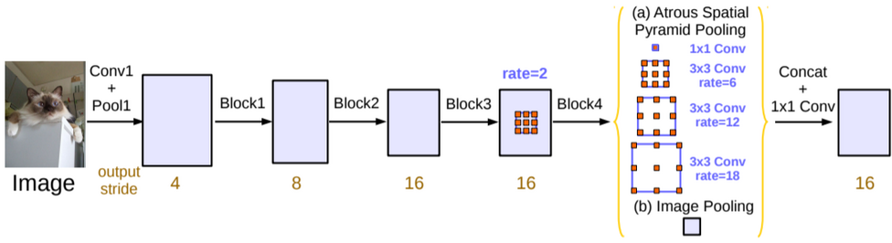

DeepLab
Table of Contents
1 DeepLab
https://arxiv.org/pdf/1706.05587.pdf 2017/12
DeepLab 是 google 提出的 semantic segmentation 模型, 最新的模型是 v3 和 v3+, 主要思想是利用多个不同 dilation rate 的 dilated conv2d 来融合不同尺度上的特征, 有点类似于 SPP
1.1 Network

- 前四个 block 都是 resnet 的 block, 并且通过指定 stride = 2 达到 downsample 的效果
- 最后一个 block 是 16 倍的 downsample, 使用了 dilation rate = 2 的 dilated conv2d
- 后面接了一个称为 ASPP (atrous Spatial Pyramid Pooling) 的模块, 它与 SPP 类似, 分别使用 4 个不同 rate 的 dilated conv2d, 每个 conv2d 的输出都是 (h,w,256),
- 除了 ASPP, 还有一个 Image Pooling 层, 它实际是对 block4 做了一个 GlobalAveragePooling 后再通过 1x1 conv2d 和 bilinear interpolation, 最终也是输出 (h,w,256)
- ASPP 和 image pooling 按 channel concat 起来, 然后通过 1x1 conv 输出 (h,w,C), C 为最终的 class 个数
deeplab_v3 最后会使用 bilinear interpolation 实现的 upsampling 得到最终的输出, 在上面的图中没有画出来